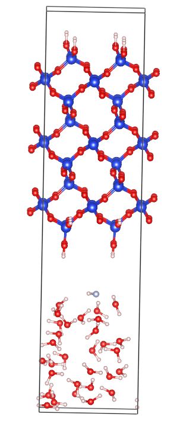
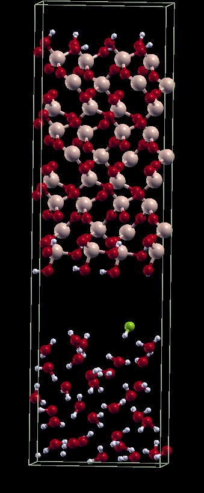
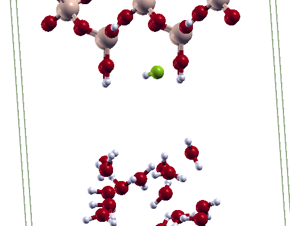

News
-
Apr 2026
Oral presentation — ACS DFW Meetings in Miniature
Texas Wesleyan University
-
Aug 2025
Oral presentation — ACS Fall Meeting
Washington, D.C.
-
2025
Began advising under Prof. Hsin-Yu Ko
Joined the Ko Research Group at UNT
-
Apr 2025
Oral presentation — ACS DFW Meetings in Miniature
East Texas A&M University
-
Feb 2025
Oral presentation — Texas Computational Chemistry Symposium
Texas Woman’s University
-
Fall 2023
Awarded Best Teaching Assistant
Chemistry Resource Center, University of North Texas
About
I work on making quantum-accurate simulation cheap enough to be useful at the length and time scales where chemistry actually happens.
I am in Prof. Hsin-Yu Ko’s group, the Ko Research Group at UNT, developing machine-learned force fields for polymer structure prediction, computing infrared spectra in situ from ab initio trajectories, and using localized orbitals to find reaction pathways in condensed-phase systems. A good part of my time goes to the unglamorous half of that problem: generating trustworthy training data, and building pipelines that run the same way twice.
Before this I worked with Prof. Omar Valsson on machine-learned collective variables for driving polymorphic transitions in molecular crystals, and before that on lipid bilayer dynamics under salt at IIT Jodhpur. Both taught me not to trust a simulation until I have watched it converge from two directions.
Research
-
Machine-learned force fields for polymer structure prediction
Active-learning loops that decide for themselves which configurations are worth a DFT calculation, applied to polymer systems where the interesting physics lives in weak, many-body interactions.
DeePMD-kit · DP-GEN · LAMMPS
-
In-situ vibrational spectroscopy and reaction discovery
Infrared spectra recovered from dipole autocorrelation along ab initio trajectories, and localized orbitals used to trace bond making and breaking in condensed-phase reactions rather than guessing at a mechanism in advance.
Quantum ESPRESSO · Wannier localization · AIMD
-
Simulation infrastructure that survives contact with reality
Containerized, GPU-accelerated DFT and MD dispatched onto Kubernetes rather than a batch scheduler — with the isolation, reproducibility, and cleanup guarantees a multi-week active-learning campaign needs.
Kubernetes · Docker · Apptainer · CUDA
-
Collective variables for molecular crystal polymorphism
Earlier work with Prof. Omar Valsson: learning collective variables from data to drive polymorphic transitions in molecular crystals, and sampling the free-energy landscapes between forms.
PLUMED · Metadynamics · SOAP descriptors
-
Simulation of microelectronic surfaces
Hydrofluoric acid is the standard wet-etch chemistry for removing silicon dioxide in semiconductor fabrication, but the atomistic sequence of bond-breaking events at the SiO2/HF interface is hard to resolve experimentally. We use ab initio molecular dynamics to follow the reaction as it actually happens rather than assume a mechanism in advance: an explicit HF molecule is placed at a hydroxylated SiO2 surface submerged in a slab of liquid water, and the trajectory is propagated at the DFT level so that proton transfers, the nucleophilic attack of fluoride on a silicon center, and the eventual cleavage of a Si–O bond all emerge from the dynamics itself. Watching the surrounding hydrogen-bond network frame by frame shows how water mediates each proton transfer and stabilizes the departing silicate fragment — detail that a static reaction-pathway calculation would not capture.

SiO₂ slab · water layer

HF approaching the surface

Reactive interface, close-up
Publications
Manuscripts from this work are in preparation. This section will list peer-reviewed papers and preprints as they appear.
Skills
Electronic structure & simulation
Machine learning for chemistry
Infrastructure & compute
Languages & tooling
Education
-
2023–
Ph.D., Chemistry
University of North Texas · Advisor: Prof. Hsin-Yu Ko (since 2025), previously Prof. Omar Valsson
-
2021–2023
M.Sc., Chemistry
Indian Institute of Technology Jodhpur · Advisor: Prof. Ananya Debnath
Understanding lipid dynamics in model lipid bilayers under the influence of salts using molecular dynamics simulations
Talks & schools
-
Apr 2026
Oral presentation — ACS DFW Meetings in Miniature
Texas Wesleyan University
-
Aug 2025
Oral presentation — ACS Fall Meeting
Washington, D.C.
-
Apr 2025
Oral presentation — ACS DFW Meetings in Miniature
East Texas A&M University
-
Feb 2025
Oral presentation — Texas Computational Chemistry Symposium
Texas Woman’s University
-
School
i-COMSE 7th Molecular Dynamics Summer School
Boise State University · Python for MD, LAMMPS, HPC
-
School
RESOLV Summer School on Solvation Science
Ruhr University Bochum, Germany
Teaching
-
2023–
Chemistry Resource Center
General chemistry concept clarification, one on one and in small groups.
Best Teaching Assistant, Fall 2023 -
2024, 2025
Teaching assistant — Physical Chemistry II
Spring 2024 with Dr. Omar Valsson; Spring 2025 with Dr. Hsin-Yu Ko.
-
2024–2025
Laboratory instructor — Physical and Organic Chemistry
Fall 2024 and Spring 2025.
Contact
I am looking for postdoctoral positions in the US, working on machine-learned force fields for soft and porous materials and on quantum-accurate training data. Happy to hear from anyone working nearby.
- Group
- ko-research.org
- KritiAlam@my.unt.edu
- GitHub
- scichemcode
- kritialam
- CV
- cv.pdf